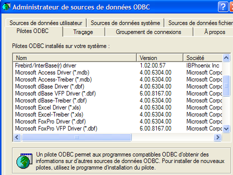
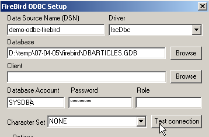
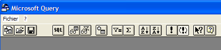
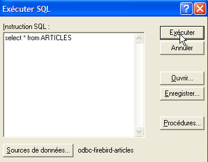

8. 安装和使用 [Firebird] 的 ODBC 驱动程序
8.1. 安装驱动程序
市面上有许多数据库。为了在 MS Windows 环境下标准化数据库访问，微软开发了一个名为 ODBC（开放数据库连接）的接口。该接口层将各数据库的具体特性隐藏在标准接口之后。目前有许多适用于 MS Windows 的 ODBC 驱动程序，可简化数据库访问。例如，以下是安装在 Windows XP 计算机上的一些 ODBC 驱动程序：

依赖这些驱动程序的应用程序无需重写代码即可使用任何数据库。ODBC 驱动程序充当应用程序与数据库管理系统 (DBMS) 之间的中介。应用程序 <-> ODBC 驱动程序的接口是标准化的。如果您更换了数据库管理系统，只需安装新数据库管理系统的 ODBC 驱动程序，应用程序即可保持不变。
 |
[Firebird] 下载页面（第 2.1 节）上的 [firebird-odbc-provider] 链接提供了 ODBC 驱动程序的下载入口。安装完成后，该驱动程序将显示在已安装的 ODBC 驱动程序列表中。
8.2. 创建 ODBC 数据源
- 启动工具 [开始 -> 设置 -> 配置工具 -> 管理工具 -> ODBC 数据源]：

- 随后将显示以下窗口：

- 点击 [添加] 以添加一个新的系统数据源（位于 [系统 DSN] 窗格中），我们将将其与第 2.3 节中创建的 Firebird 数据库 [dbarticles] 关联：

- 首先，我们需要指定要使用的 ODBC 驱动程序。在上图中，我们选择 Firebird 的驱动程序，然后点击 [完成]。随后 Firebird ODBC 驱动程序向导将接管操作：

- 我们填写各个字段：

ODBC 源的 DSN 名称——可以是任意名称 | |
要使用的 Firebird 数据库名称——使用 [浏览] 选择相应的 .gbd 文件。此处，我们使用第 8 页创建的 [dbarticles] 数据库。 | |
用于连接数据库的用户名 | |
与该用户名关联的密码 |
[测试连接] 按钮可让您验证所输入信息的有效性。使用该按钮前，请先启动 [Firebird] 数据库管理系统：

- 根据需要多次点击 [确定] 以确认 ODBC 向导
8.3. 测试 ODBC 数据源
有多种方法可以验证 ODBC 数据源是否正常工作。在此，我们将使用 Excel：

- 使用上方的 [数据 -> 外部数据 -> 创建查询] 选项。这将打开数据源定义向导的第一个窗口。[数据库] 窗格中列出了当前计算机上已定义的 ODBC 数据源：

- 选择我们刚刚创建的 ODBC 数据源 [odbc-firebird-articles]，然后单击 [确定] 进入下一步：

- 此窗口列出了 ODBC 数据源中可用的表和列。我们将选择整个表：

- 点击 [下一步] 进入下一步：

- 此步骤允许我们筛选数据。在此，我们不进行任何筛选，直接进入下一步：

- 此步骤允许我们对数据进行排序。我们不会进行排序，而是直接进入下一步：

- 最后一步询问我们希望对数据进行什么操作。这里，我们将数据导出到 Excel：

- 此时，Excel 会询问我们希望将检索到的数据放置在何处。我们将数据放置在当前工作表的 A1 单元格开始的位置。随后，数据便会导入到 Excel 工作表中：

还有其他方法可以测试 ODBC 数据源的有效性。例如，您可以使用 [http://www.openoffice.org] 提供的免费 OpenOffice 套件。以下是一个使用 OpenOffice Text 的示例：
 |  |
- OpenOffice 窗口左侧的图标可用于访问数据源。随后界面将切换为显示数据源管理区域：

- 系统预设了一个数据源：[参考文献]。右键单击数据源区域，可通过[管理数据源]选项创建新的数据源：

- [数据源管理]向导可用于创建数据源。右键单击数据源区域，可通过[新建数据源]选项创建新的数据源：

任意名称。此处我们使用了 ODBC 数据源的名称 | |
OpenOffice 可以通过 JDBC、ODBC 或直接连接（如 MySQL、Dbase 等）处理各种数据库类型。在本示例中，请选择 ODBC | |
输入字段右侧的按钮可让我们访问本机上的 ODBC 数据源列表。我们选择数据源 [odbc-firebird-articles] |
- 切换到 [ODBC] 面板，以定义将用于建立连接的用户凭据：

ODBC 数据源的所有者 |
- 转到 [表] 面板。系统会提示您输入密码。此处的密码是 [masterkey]：

- 单击 [确定]。随后将显示 ODBC 源中的表列表：

- 您可以选择要在 [OpenOffice] 文档中显示的表。在此，我们选择 [ARTICLES] 表并单击 [确定]。数据源定义已完成。随后，它将出现在当前文档的数据源列表中：

- 您可以使用鼠标将上方的 [ARTICLES] 表拖拽到 [OpenOffice] 文档中。
8.4. Microsoft Query
尽管 MS Query 随 MS Office 一起提供，但该程序并不总是带有快捷方式。您可以在 MS Office 的 Office 文件夹中找到它，文件名为 MSQRY32.EXE。例如：“C:\Program Files\Office 2000\Office\MSQRY32.EXE”。 MS Query 允许您使用 SQL 查询对任何 ODBC 数据源进行查询。这些查询既可以通过图形界面构建，也可以直接在键盘上输入。由于大多数 Windows 数据库都提供了 ODBC 驱动程序，因此均可通过 MS Query 进行查询。启动 MS Query 后，将显示以下界面：

首先，我们需要指定要查询的 ODBC 数据源。为此，请使用“文件/新建”选项：

我们将使用之前创建的 ODBC 数据源。随后 MS Query 将显示该数据源的结构：

由于您已掌握 SQL 语言，向导功能并不实用，因此我们点击 [取消] 按钮。通过 [文件 / 执行 SQL] 选项，我们可以对所选的 ODBC 数据源运行 SQL 查询：
 |  |
系统会提示我们再次选择 ODBC 数据源：

选择 ODBC 数据源后，我们可以在其上执行 SQL 命令：

我们得到以下结果：

欢迎读者创建一个基于 Firebird DBBIBLIO 数据库的 ODBC 数据源，并重复上述示例。